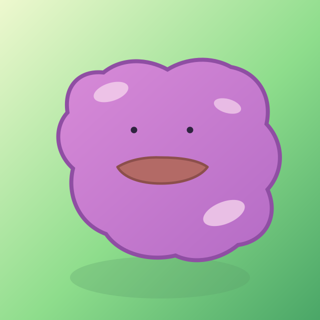

Dittonomics
A Ditto-style Codex research system that keeps copying useful traits

Dittonomics is a Codex-native research operating system for empirical work.
The Ditto idea is intentional: this system keeps copying useful traits from upstream workflows, then reorganizes them into one portable setup you can keep extending over time. The website is the public manual. The repo is the starter kit. Your local install is the live working system.
Fork / Install / Customize
Start here if you want to use Dittonomics yourself or roll it out for coauthors:
- Open the public manual: sebastianritterg.github.io/dittonomics
- Fork the GitHub repo: github.com/sebastianritterg/dittonomics
- Install the starter locally: copy the repo’s
.codex/into your own~/.codex/ - Add your own writing voice: copy the
voice/templates into~/voice/and adapt them privately - Customize per project: keep paper-specific rules in each repo’s
AGENTS.md,AGENTS.override.md, and.agents/skills/
This site is written for two audiences:
- Me (Sebastian Ritter), as the person actively evolving the system and publishing the public manual
- colleagues, coauthors, and future users who need a practical guide without reading every starter file by hand
What Dittonomics Gives You
- a research pipeline with explicit phases
- worker-critic separation across the stack
- Codex-native skills instead of Claude slash-command assumptions
- a forkable public
.codex/starter bundle - optional voice files for writing-sensitive workflows
- explicit maintenance tools such as
checkpoint,resume-context, andverify-edit - a website manual and cheat sheet you can keep open while you work
Start In 20 Minutes
1. Fork or clone the repo
The public repo contains three things you will reuse repeatedly:
- the website manual in
guide/anddocs/ - the public starter bundle in
.codex/ - the public voice templates in
voice/
2. Install the starter bundle locally
Copy or adapt the repo’s .codex/ into your own ~/.codex/.
That gives you:
AGENTS.mdskills/agents/- workflow references
- utility scripts
3. Add an optional voice layer
If you want writing to preserve your own prose register, copy the files in voice/ into ~/voice/ and fill them in privately.
If you do not need a voice layer, skip it.
4. Open a research repo with Codex
In a working project repo, add:
AGENTS.md- optional
AGENTS.override.md - optional repo-local skills in
.agents/skills/ explorations/when you need a prototype sandbox
5. Use the daily loop
Morning:
use $clo-research-tools resume-context
During work:
- call the workflow skill that matches the task
End of day:
use $clo-research-tools checkpoint
First Prompts To Try
Use $clo-discover lit to map the literature on teacher value-added and school assignment.Use $clo-strategize on this research question and propose the main design plus the referee-proof robustness plan.Use $clo-write intro with current-draft mode and keep econ-intro-writing in charge of structure.Use $clo-review --peer on the current draft and tell me the highest-risk issues first.Use $clo-research-tools checkpoint for this repo. Capture today's goal, what we finished, blockers, important files, and the best next step.How The Site Is Organized
- Quick Start: what Dittonomics is and how to get running quickly
- User Guide: daily usage, examples, checkpoint or resume workflow, and how to call skills
- Agents: who does what and when the system dispatches each role
- Architecture: how the local install, repo overlays, website, and state files fit together
- Customization: how to install your own stack, set up voice, and onboard colleagues
- Reference: the cheat sheet for skills, utilities, agents, folders, and recurring prompts
Public Home
The public website is:
Keep this site open while you work. It is meant to be the everyday operating manual and cheat sheet for the system.
How To Fork Dittonomics
If you want your own version of the system:
- fork the repo on GitHub
- clone your fork locally
- copy or adapt the repo’s
.codex/starter bundle into your own~/.codex/ - optionally copy the
voice/templates into your private~/voice/ - keep repo-specific rules in each project’s
AGENTS.md,AGENTS.override.md, and.agents/skills/ - use this website as the shared manual for your own adaptation
The practical split is:
- fork the repo when you want your own public or shared Dittonomics variant
- copy the starter bundle when you want the user-level install on your machine
- use repo overlays when a specific paper or project needs local rules
Public Repo vs Local Install
| Layer | Role |
|---|---|
guide/ |
source for the website manual |
docs/ |
rendered site for GitHub Pages |
.codex/ in this repo |
public starter bundle |
~/.codex/ |
your live local user-level install |
~/voice/ |
your private voice layer |
project repo AGENTS.md |
repo constitution and working rules |
project repo .codex-state/ |
local checkpoint and resume files |
The Ditto Rule
Keep the system open to future additions.
That means:
- do not freeze the workflow as if this is the final shape
- document new traits as they get added
- keep the public starter generic
- keep private voice and machine-specific behavior separate
- let the website become the shared memory for the team